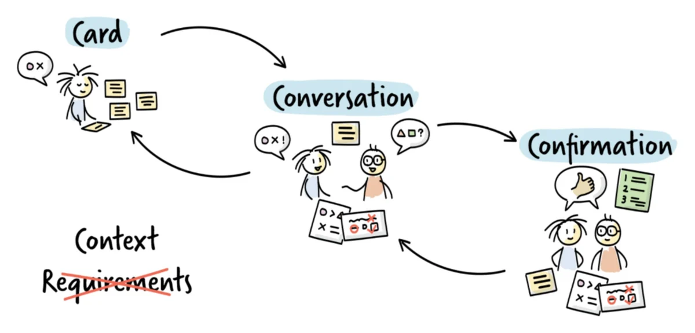
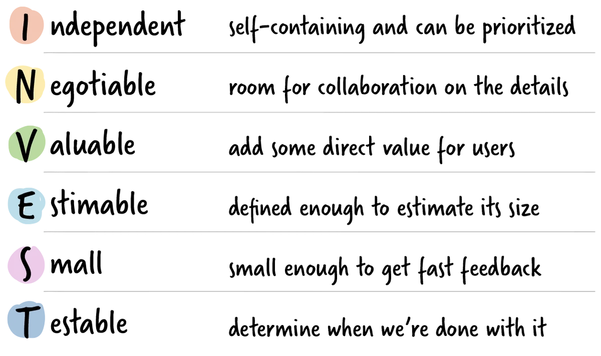

What a user story is
A user story is often mistaken for a requirements format, but it is really meant to be exactly what it sounds like: a story about a user doing something in their own domain, captured in natural language rather than technical specification. The idea originated with Extreme Programming in the 1990s and is commonly written as: as a role, I want some functionality, in order to achieve a reason. This format is useful because it forces answers to three questions: who is this for, what do they want to do that they cannot do today, and why does it matter to them. The template itself is less important than making sure those three questions are actually answered.
Card, conversation, confirmation

Ron Jeffries described this well with the 3Cs: a card, short enough to fit on an index card, prompts a conversation between the team and the people who will use the feature, and once a shared understanding is reached, that understanding is confirmed through acceptance criteria. Acceptance criteria describe how the product should behave in a specific scenario and are often written in a given, when, then structure: given some initial condition, when an event occurs, then an expected outcome follows. Both positive criteria, describing what should happen, and negative criteria, describing what should not happen, are useful.
INVEST and splitting stories

Bill Wake's INVEST acronym is a useful checklist for whether a story is well formed: independent enough to be prioritised on its own, negotiable in its details, valuable to the user, estimable in size, small enough to get fast feedback, and testable so the team knows when it is done. Splitting large stories into smaller ones that still satisfy INVEST is a skill in itself. The key is to aim for vertical slices, changes that touch every layer of the system needed to deliver real, observable value, rather than horizontal slices that only touch one architectural layer and deliver nothing usable on their own.
Definition of Ready and Definition of Done
Finally, a story is only ready to be picked up once it meets a team's Definition of Ready: it is clear to everyone, it has two or three acceptance criteria, and it is feasible within a short cycle. This is distinct from the Definition of Done, which applies to every item and describes the quality bar the finished work must meet before it counts as complete.
Templates
Printable A4 worksheets for applying this resource to your own product.
- User Story and Acceptance Criteria Card Write one user story with its acceptance criteria. Download PDF
- INVEST Checklist Check whether a user story is well formed. Download PDF